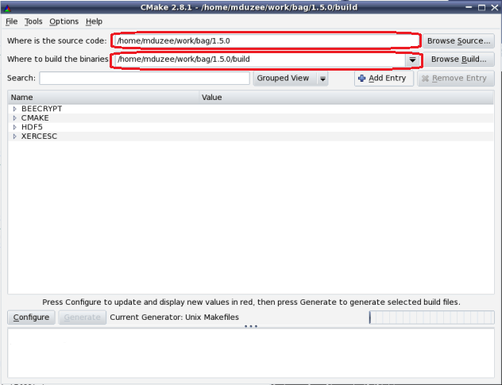
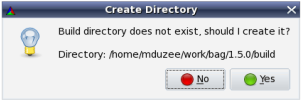
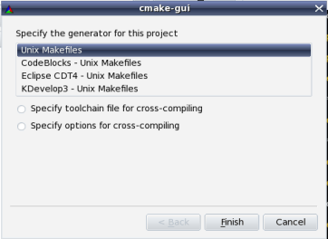

Building with Linux gcc
Note:
These instructions assume that the openns source code is located at
'/home/mduzee/work/bag/1.5.0'.
Configure and build bag
In the CMake GUI select the bag folder and specify the location of the binary files. Next click the 'Configure' button.

Click the 'Configure' button. You will be prompted to create the output folder. Select Yes.

You will then be prompted to select the appropriate generate.

Finally click the 'Configure' and then 'Generate' buttons. The makefile is now
available in the bag/build folder. From the console browse to the bag/build folder and run the following command.
make